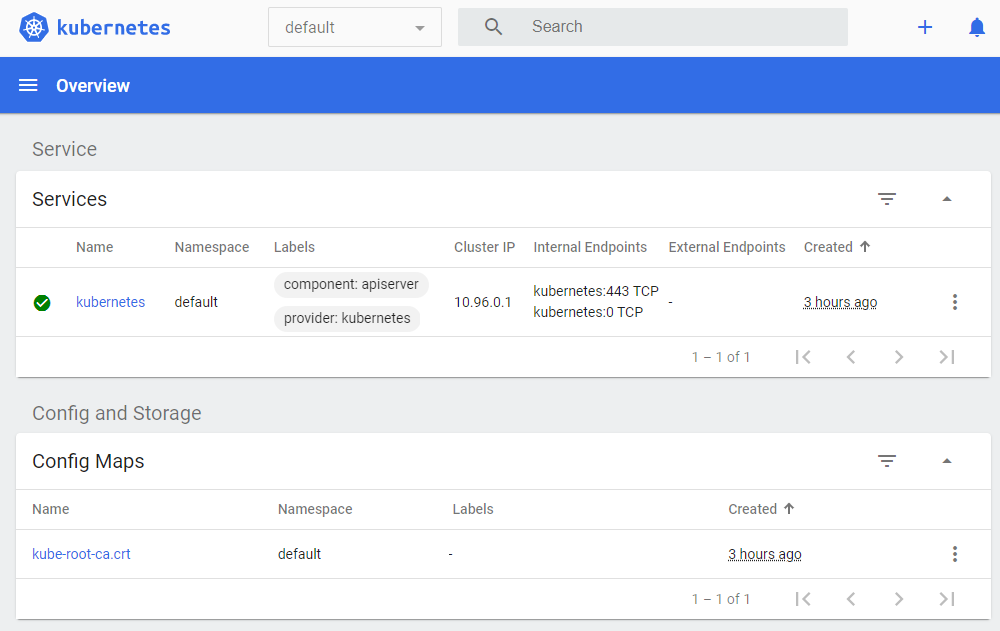

Working environment installation
Working environment installation
Working environment installation
In the production environment:
For a personal testing on a local machine such setup may be too difficult or impossible. So Minicube, open source solution, may be used that runs Master and Worker processes on one machine and has Docker runtime container preinstalled.
Kubectl is a command line tool for K8s cluster. There are also web interface and REST API, but Kubectl is the most powerful. It communicates with the Master Node API Server to fulfill tasks like creating and destroying pods, creating services, etc.
We will use
kubectlto work with the Minikube cluster. But Kubectl may be used for managing real K8s clusters as well.
Jul 2, 2021
38:58 Here we are not going to follow the instructions in the video.
Minikube home page.
Minikube installation instructions.
Note. In non-Linux environments a virtualization system (like VirtualBox) is required. Here we don't need it since we are working in a real Ubuntu Linux.
The environment:
$ uname -a
Linux myhost 5.4.0-70-generic #78~18.04.1-Ubuntu SMP Sat Mar 20 14:10:07 UTC 2021 x86_64 x86_64 x86_64 GNU/LinuxUsing the Linux distributive independent method.
Note. With distributive specific installation (Debian package in this case),
kubectltool must probably be installed automatically. But now we are going to later install it separately.
$ curl -LO https://storage.googleapis.com/minikube/releases/latest/minikube-linux-amd64
$ du -h minikube-linux-amd64
62M minikube-linux-amd64
$ sudo install minikube-linux-amd64 /usr/local/bin/minikube$ which minikube
/usr/local/bin/minikube
$ minikube version
minikube version: v1.21.0
commit: 76d74191d82c47883dc7e1319ef7cebd3e00ee11In non-Linux environment
--vm-driverparameter must be used.
$ minikube start
* minikube v1.21.0 on Ubuntu 18.04
* Automatically selected the docker driver. Other choices: none, ssh
* Starting control plane node minikube in cluster minikube
* Pulling base image ...
* Downloading Kubernetes v1.20.7 preload ...
> preloaded-images-k8s-v11-v1...: 492.20 MiB / 492.20 MiB 100.00% 6.05 MiB
> gcr.io/k8s-minikube/kicbase...: 359.09 MiB / 359.09 MiB 100.00% 3.97 MiB
* Creating docker container (CPUs=2, Memory=2200MB) ...
* Preparing Kubernetes v1.20.7 on Docker 20.10.7 ...
- Generating certificates and keys ...
- Booting up control plane ...
- Configuring RBAC rules ...
* Verifying Kubernetes components...
- Using image gcr.io/k8s-minikube/storage-provisioner:v5
* Enabled addons: storage-provisioner, default-storageclass
* kubectl not found. If you need it, try: 'minikube kubectl -- get pods -A'
* Done! kubectl is now configured to use "minikube" cluster and "default" namespace by defaultThe existing Docker version is:
$ docker --version Docker version 20.10.5, build 55c4c88So looks like
minikubeuses its own Docker container runtime.
$ kubectl get po -A
-bash: kubectl: command not foundkubectl will be installed later. Now need to use the less convenient syntax:
$ minikube kubectl -- get po -A
> kubectl.sha256: 64 B / 64 B [--------------------------] 100.00% ? p/s 0s
> kubectl: 38.36 MiB / 38.36 MiB [-------------] 100.00% 10.81 MiB p/s 3.8s
NAMESPACE NAME READY STATUS RESTARTS AGE
kube-system coredns-74ff55c5b-bp46q 1/1 Running 0 6m23s
kube-system etcd-minikube 1/1 Running 0 6m29s
kube-system kube-apiserver-minikube 1/1 Running 0 6m29s
kube-system kube-controller-manager-minikube 1/1 Running 0 6m29s
kube-system kube-proxy-h6r7v 1/1 Running 0 6m23s
kube-system kube-scheduler-minikube 1/1 Running 0 6m29s
kube-system storage-provisioner 1/1 Running 0 6m34sThat's probably it. The cluster may be used.
We need the cluster running for the following steps. The command to stop it is
minikube stop.
kubectl installationK8s doc: kubectl overview |
Install and Set Up kubectl on Linux.
Using the Linux distributive independent method:
$ curl -L -s https://dl.k8s.io/release/stable.txt && echo
v1.21.2In the following commands insert the version (v1.21.2 in this case) instead of <version>.
$ curl -LO "https://dl.k8s.io/release/<version>/bin/linux/amd64/kubectl"
$ curl -LO "https://dl.k8s.io/<version>/bin/linux/amd64/kubectl.sha256"
$ echo "$(<kubectl.sha256) kubectl" | sha256sum --check
kubectl: OK
$ sudo install -o root -g root -m 0755 kubectl /usr/local/bin/kubectl$ which kubectl
/usr/local/bin/kubectl
$ kubectl version --short=true
Client Version: v1.21.2
Server Version: v1.20.7See K8s Dashboard.
Notes: 1. The Dashboard may be a convenient administration tool but we are going to primarily use command line in the course.
2. This Dashboard is not installed in a real K8s cluster by default.
$ minikube dashboard
. . .
* Opening http://127.0.0.1:46867/api/v1/namespaces/kubernetes-dashboard/services/http:kubernetes-dashboard:/proxy/ in your default browser...
. . .
Error: cannot open display: localhost:10.0This works if executed on the Ubuntu host directly. The link is automatically opened in the browser:

External access may be adjusted using the instructions: this or this (the latter is probably better).